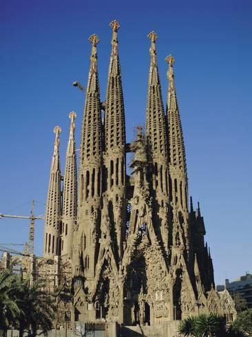
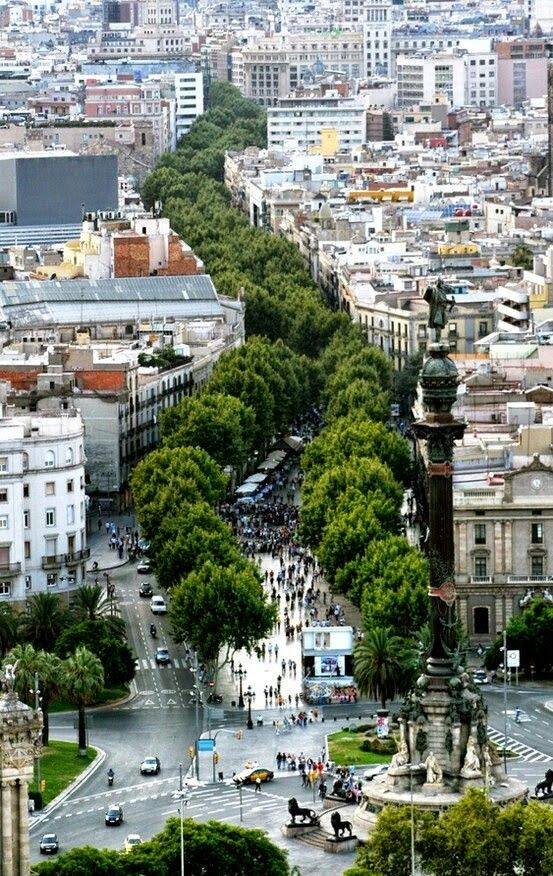
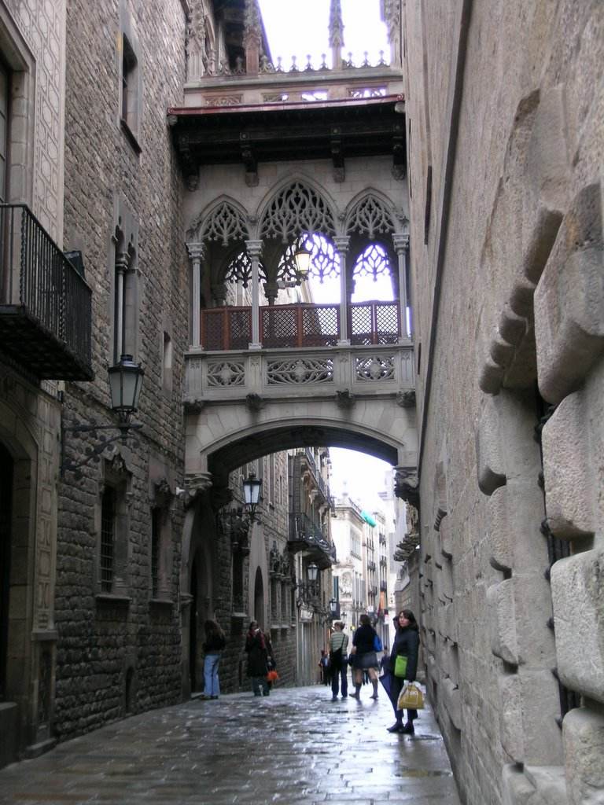

La sagrada familia
La Sagrada Familia es el icono indiscutible de Barcelona y la obra maestra de Antoni Gaud�. Se trata del monumento m�s visitado de la ciudad. Reconocible desde lejos por sus torres que se elevan hacia el cielo, cuenta con dos fachadas exteriores que impactan al visitante. Sin embargo, es en su interior donde se refleja la genialidad de Gaud�. En la actualidad la bas�lica se encuentra todav�a en construcci�n y su finalizaci�n est� prevista para el a�o 2026.
La Rambla
La Rambla, tambi�n conocida como Las Ramblas, es una de las principales arterias de Barcelona y uno de los lugares m�s conocidos de la ciudad. Se trata de un agradable paseo de 1,3 kil�metros que conecta la Plaza de Catalu�a con el antiguo puerto de la ciudad.

Barrio G�tico
El Barrio G�tico (Barri G�tic) es, junto con Las Ramblas, uno de los lugares de visita imprescindible en Barcelona. Es el elemento central del distrito municipal de la Ciutat Vella, el casco antiguo de Barcelona, que constituye el mayor tesoro de edificios g�ticos de toda Europa. Un gran n�mero de bares, restaurantes y tiendas mantiene la zona en permanente animaci�n hasta bien entrada la noche.

Medios de transporte
| Linea | Cabecera |
|---|---|
| L1 | Hospital de Bellvitge / Fondo |
| L2 | Paral lel / Badalona Pompeu Fabra |
| L3 | Zona Universitaria / Trinitat Nova |
| L4 | La Pau / Trinitat Nova |
| L5 | Cornell� Centre / Vall d'Hebron |
| L9n | La Sagrera / Can Zam |
| L9s | Aeroport T1 / Zona Universit�ria |
| L10n | La Sagrera / Gorg |
| L10s | Foc / Collblanc |
| L11 | Trinitat Nova / Can Cui�s |
| FM | Paral�lel / Parc de Montju�c |
Recibe nuestras novedades
Barcelona posee una impresionante oferta cultural, contando con algunos interesantes museos como la Fundacion Joan Miro o el Museo Picasso, aunque donde se aprecia realmente el arte que envuelve la ciudad es paseando por sus calles cargadas de encanto. La conocidisima Sagrada Familia o el sorprendente Parque Guell son algunas de las marcas con las que Antonio Gaudi decoro la ciudad de un modo espectacular. Pero Barcelona no es solo arte, sino que tambien posee soleadas playas combinadas con una sugerente oferta gastronomica.